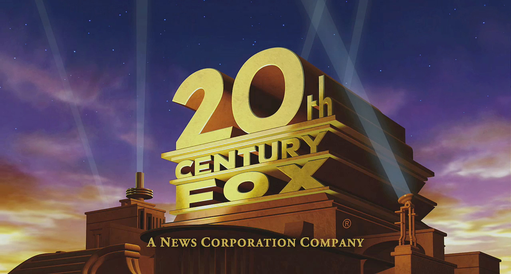
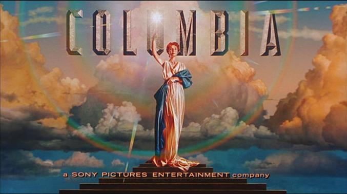
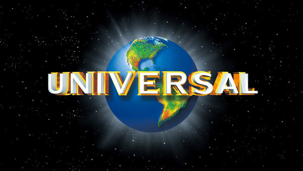

Почему же стоит начать изучать то, что смотришь?
Существует множество невероятно интересных фильмов и сериалов, которые действительно достойны внимания многих зрителей, а не исключительно заядлых киноманов. Есть тенденция пускать в прокат в кинотеатрах только серьезные и пропиаренные картины. Неудивительно, что большая масса людей привыкла посещать именно такие фильмы. Фильмы, которые "ну точно" хорошие.
Так какие же кинокомпании производят в основном масштабные и кассовые проекты?
Ну тут все просто. А какие вы привыкли видеть логотипы и заставки в начале почти любого фильма, что крутят по телевизору или в кинотеатре?
  Если не это, то что?
Ну что-что. Не фильмы Марвел же остаются, не так ли. Стоит открыть для себя мир, в котором существуют жанры. Когда ты не знаешь, что хочешь, то пробежаться по спискам фильмов, разбросанным по жанрам, помогает отлично.
(с) Батршина Наталья, 2017